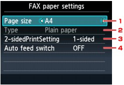
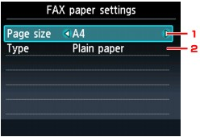

This machine prints received faxes to paper loaded in the machine beforehand. You can use the Operation Panel to change the paper settings for printing faxes. Make sure that the settings are appropriate for the loaded paper.
 Important
Important-
If you are using MX880 series, load Legal-sized paper on the Rear Tray. A4 or Letter-sized paper can be fed from the Cassette.
-
If paper other than A4, Letter-, Legal-, or 8.5 x 14 inches sized paper is loaded, the received faxes are stored in machine's memory and Check the page size and press OK. is displayed on the LCD. In this case, replace the loaded paper with A4, Letter-, Legal-, or 8.5 x 14 inches sized paper, then press the OK button.
You can also press the Stop button to close the message and print the stored documents in machine's memory later.
-
If no paper is loaded in the paper source, or paper has run out while printing is in progress, the received faxes are stored in machine's memory and There is no paper. Load paper and press OK. is displayed on the LCD. In this case, load paper in the paper source and press the OK button.
You can also press the Stop button to close the message and print the stored documents in machine's memory later.
 Note
Note-
If the sender sends a document that is larger than Letter-size or Legal-size, such as 11 x 17 inches, the sender's machine may send the fax automatically reduced in size or divided, or send only a part of the original.
-
Make sure that the machine is turned on.
-
Press the FAX button.
The Fax standby screen is displayed.
-
Press the left Function button.
-
Select FAX paper settings, then press the OK button.
The FAX paper settings screen is displayed.
For details on the settings, see Setting Items.
Setting Items
Use the 
 button to select the setting item. Use the
button to select the setting item. Use the 
 button to change the setting.
button to change the setting.
|
The LCD on MX880 series |
The LCD on MX420 series |
|

|

|
-
Page size
Select the page size from A4, Letter, or Legal.
-
Type
-
MX880 series:
The paper type is set to Plain paper.
-
MX420 series:
Select Plain paper.
-
-
2-sidedPrintSetting (MX880 series)
Select two-sided printing or single-sided printing.
Two sided printing is available for black & white faxes. Color faxes are printed on the single-side of paper regardless of this setting.
After 2-sided is selected for 2-sidedPrintSetting, press the right Function button to specify the stapling side.
Note-
When the page size other than Legal is selected, you can select 2-sided for 2-sidedPrintSetting.
-
-
Auto feed switch (MX880 series)
Select whether to switch the paper source automatically.
When ON is selected and there is no paper in the paper source where you performed printing last, the machine automatically switches to the other paper source.
When the page size other than Legal is selected, you can select ON for Auto feed switch.
If you press the FAX button, the LCD returns to the Fax standby screen.